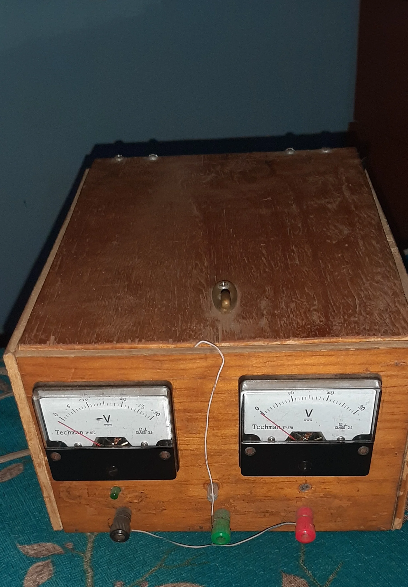
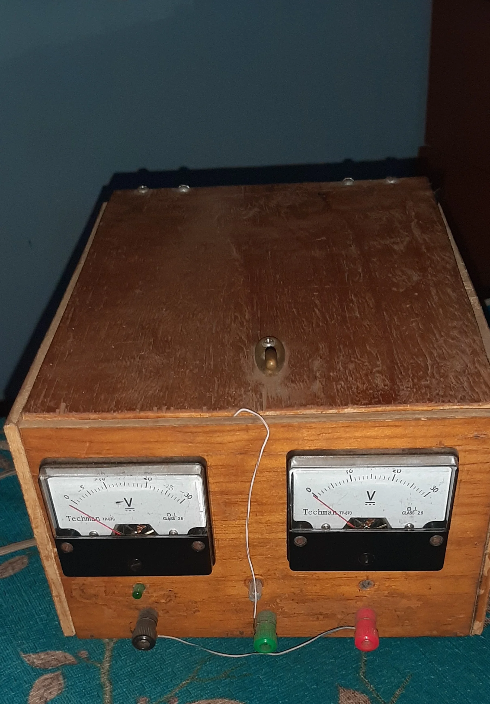

One day + one doubt + motivation
=
an answer, a solution and success.
Has the ability to perform good teamwork and take leadership if required,
indicated or mostly when people in the environment in which it is decided, does not find problems
to socialize with which he practices having a good communication that allows me to get to know people
well and know how to deal with them, is related with patience and flexibility to build trust and achieve the
goal that is proposed, also has a strong time management that over the years has allowed him to be
part of many activities even if it is a very busy or dynamic schedule.
He has knowledge in programming in the HTML and C # language, he also has knowledge in the creation, normalization
and management of databases, he has obtained a certificate in basic office automation, good command of the power point
program as well as an accreditation in typing and computing administrative degree granted by IGCAD and Excel certification
by Microsoft, during his middle studies he achieved the goal of obtaining a beginner level Internet
Security diploma from the telephone organization of El Salvador.
Your goal as a professional is to innovate whenever you find opportunity and help others to obtain and understand the
knowledge you have.
José Antonio
Serpas Ramírez
Usulután, El Salvador · (503) 7893 - 2251
He has a bachelor's degree from the National Institute of Usulután, El Salvador in the specialty of Software Development (2015 - 2017).
He is currently studying Computer Systems and Networks Engineering at the Universidad Gerardo Barrios Campus Usulután,
El Salvador.
Contact
E-mail: joseserpas2525@gmail.com
Instagram: https://www.instagram.com/aske25_/
Linkedin: https://www.linkedin.com/in/josé-antonio-serpas-ramírez-9199a2207
Facebook: https://www.facebook.com/Jos%C3%A9-Serpas-106499914826588
Projects
SRPD
Teaching Professionals Registration System.
A system that allows you to quickly and intuitively collect and administer the data of teachers in El Salvador, in addition to allowing interaction between each of the users from any browser with internet access.
 August - December 2020
August - December 2020
SRPD Mobile
Registration System for Teaching Professionals Mobile version.
The SRPD system available to everyone at any time, that was achieved by
transport the original SRPD system to its mobile version including
all functions and making it even more accessible to the public.
 February - December 2020
February - December 2020
Animatic
Animation on Arachnids.
Animation on arachnids made from scratch, the first designs were made by hand and then they left
using programs like InskCape, Gimp, Adobe Illustrator and Blender.
August - December 2020
Dual Voltage Source.
Dual Polarity Variable Voltage Source.
Made from scratch, it allows to have two independent voltage outputs,
one positive and one negative with a maximum amplitude of -15 volts and + 15 volts,
with a maximum current of 1.5 amps.

February - June 2019
Education
National Institute of Usulután
Vocational Technical Baccalaureate in Software Development.
2015 - 2017
Educational complex Profa. Blanca Ramírez de Aviles
Basic education
2007 - 2014
Certifications
-
Basic Office Management - Graphic Institute of Administrative Computing.
-
Administrative Computing Technician - Graphic Institute of Administrative Computing.
-
Microsoft Office Excel Specialist - Microsoft
-
Internet security - Fundación Telefónica El Salvador
-
2
nd
Place - Recitecno 2019 - Gerardo Barrios University
Testimony
-
Roberto Carlos Arguera Campos
José is a person who has no barriers to help others and provide them with support, he is a person
responsible with his activities and commitment, he does not like to leave things started but insists
until he has finished them, he is someone who can be trusted because he will not leave at any time
he does not do it before starting something less he will do it halfway, in the time that I have known him and
the times that I have worked with him, he has shown me that he will always put responsibilities as a priority.
About Roberto Arguera
-
Melissa Estefania Diaz Orellana
José is a person who always keeps his word and has no problems helping those who need it
he is very respectful, understanding and dynamic so that if he has to do something he does
not allow himself to be stopped and does not stop working on something until it has been
completed and finished even if that sometimes causes have to put aside fun plans that he
had for himself.
About Melissa Diaz
-
Jimmy Edgardo Bolaños Martinez
José Antonio Serpas Ramírez is a very efficient, proactive, responsible, respectful professional,
self-taught and with many ethical values in addition to the aforementioned, he has theoretical and
practical knowledge in various areas of the engineering degree in computer systems and networks,
management and maintenance based on relational and non-relational data, use of programming languages c#,
visual basic in addition management and maintenance in computer networks.
About Jimmy Bolaños
-
Rosa Yasmin Ruiz Gonzalez
Excellent companion of all the years that I have known him, I can say that his development
student and staff their ability to understand the issues their responsibility is extraordinary
with the tasks and teamwork they are very good I attest that he keeps his word and works
assigned to him, he is an excellent respectful and kind person, he is sociable and quite understandable
he is very good at working as a team, his team development is collaborative, I have known him for more
7 year old I have very high expectations of him as a person.
About Rosa Ruiz
-
Roberto Aly Garcia Ramirez
José Antonio Serpas, for almost 4 years that we have known each other within the university,
I have realizing that he is someone very bold and too respectful, someone very committed to his work
and without a doubt also a great companion since he is always ready to help you for whatever you need,
he is a dedicated person with values that define him as focused and above all a great person.
About Roberto Garcia
José Antonio Serpas Ramírez
He has a bachelor's degree from the National Institute of Usulután, El Salvador in the specialty of Software Development (2015 - 2017).
He is currently studying Computer Systems and Networks Engineering at the Universidad Gerardo Barrios Campus Usulután,
El Salvador.
Contact
E-mail: joseserpas2525@gmail.com
Instagram: https://www.instagram.com/aske25_/
Linkedin: https://www.linkedin.com/in/josé-antonio-serpas-ramírez-9199a2207
Facebook: https://www.facebook.com/Jos%C3%A9-Serpas-106499914826588
Projects
SRPD
A system that allows you to quickly and intuitively collect and administer the data of teachers in El Salvador, in addition to allowing interaction between each of the users from any browser with internet access.
SRPD Mobile
The SRPD system available to everyone at any time, that was achieved by transport the original SRPD system to its mobile version including all functions and making it even more accessible to the public.
Animatic
Animation on arachnids made from scratch, the first designs were made by hand and then they left
using programs like InskCape, Gimp, Adobe Illustrator and Blender.
Dual Voltage Source.
Made from scratch, it allows to have two independent voltage outputs, one positive and one negative with a maximum amplitude of -15 volts and + 15 volts, with a maximum current of 1.5 amps.
Education
National Institute of Usulután
Educational complex Profa. Blanca Ramírez de Aviles
Certifications
- Basic Office Management - Graphic Institute of Administrative Computing.
- Administrative Computing Technician - Graphic Institute of Administrative Computing.
- Microsoft Office Excel Specialist - Microsoft
- Internet security - Fundación Telefónica El Salvador
- 2 nd Place - Recitecno 2019 - Gerardo Barrios University
Testimony
-
Roberto Carlos Arguera Campos
José is a person who has no barriers to help others and provide them with support, he is a person
responsible with his activities and commitment, he does not like to leave things started but insists
until he has finished them, he is someone who can be trusted because he will not leave at any time
he does not do it before starting something less he will do it halfway, in the time that I have known him and
the times that I have worked with him, he has shown me that he will always put responsibilities as a priority.
About Roberto Arguera -
Melissa Estefania Diaz Orellana
José is a person who always keeps his word and has no problems helping those who need it
he is very respectful, understanding and dynamic so that if he has to do something he does
not allow himself to be stopped and does not stop working on something until it has been
completed and finished even if that sometimes causes have to put aside fun plans that he
had for himself.
About Melissa Diaz -
Jimmy Edgardo Bolaños Martinez
José Antonio Serpas Ramírez is a very efficient, proactive, responsible, respectful professional,
self-taught and with many ethical values in addition to the aforementioned, he has theoretical and
practical knowledge in various areas of the engineering degree in computer systems and networks,
management and maintenance based on relational and non-relational data, use of programming languages c#,
visual basic in addition management and maintenance in computer networks.
About Jimmy Bolaños -
Rosa Yasmin Ruiz Gonzalez
Excellent companion of all the years that I have known him, I can say that his development
student and staff their ability to understand the issues their responsibility is extraordinary
with the tasks and teamwork they are very good I attest that he keeps his word and works
assigned to him, he is an excellent respectful and kind person, he is sociable and quite understandable
he is very good at working as a team, his team development is collaborative, I have known him for more
7 year old I have very high expectations of him as a person.
About Rosa Ruiz -
Roberto Aly Garcia Ramirez
José Antonio Serpas, for almost 4 years that we have known each other within the university,
I have realizing that he is someone very bold and too respectful, someone very committed to his work
and without a doubt also a great companion since he is always ready to help you for whatever you need,
he is a dedicated person with values that define him as focused and above all a great person.
About Roberto Garcia